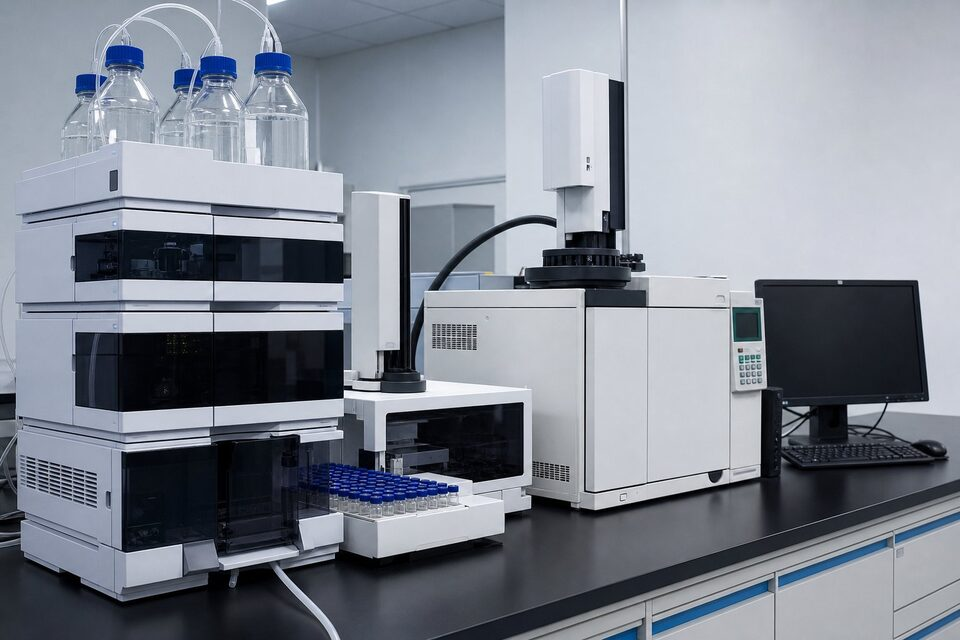

اصل کروماتوگرافی
ایده اصلی کروماتوگرافی ساده است: مخلوط را با یک فاز متحرک از میان یک فاز ثابت عبور دهید؛ اجزایی که با فاز ثابت برهمکنش بیشتری دارند کندتر حرکت میکنند و دیرتر خارج میشوند. این اختلاف سرعت، جداسازی را ممکن میسازد. در انتهای مسیر، یک آشکارساز هر جزء را در لحظه خروج شناسایی و اندازهگیری میکند و نتیجه به صورت کروماتوگرام ثبت میشود. قدرت این روش در تفکیکپذیری بالای آن است: ترکیباتی که با روشهای ساده قابل تفکیک نیستند، با انتخاب مناسب ستون و شرایط، از هم جدا میشوند.

(GC)؛ کروماتوگرافی گازی
در (GC)، نمونه تبخیر شده و با گاز حامل از میان ستون عبور میکند. این روش برای ترکیبات فرار و پایدار در دمای تبخیر ایدهآل است: حلالها، هیدروکربنها، گازها و بسیاری آلایندهها. آشکارسازهای مختلف برای کاربردهای متفاوت وجود دارند؛ از آشکارسازهای عمومی تا آشکارسازهای بسیار حساس و انتخابی برای ترکیبات خاص. نقطه قوت (GC)، تفکیکپذیری عالی و حساسیت بالا در تحلیل ترکیبات فرار است؛ اما نمونههای غیرفرار یا ناپایدار حرارتی با این روش قابل آنالیز مستقیم نیستند.
(HPLC)؛ کروماتوگرافی مایع
در (HPLC)، فاز متحرک یک حلال مایع است که با فشار بالا از میان ستون پمپ میشود. این روش برای ترکیبات غیرفرار، حساس به دما و مولکولهای بزرگ انتخاب طبیعی است؛ از مواد موثره دارویی تا افزودنیها و ناخالصیها. انتخاب ستون و ترکیب فاز متحرک، انعطاف بالایی در بهینهسازی جداسازی ایجاد میکند. در صنایع دارویی و شیمیایی، (HPLC) ابزار مرجع کنترل کیفیت و تعیین خلوص است و روشهای آنالیز آن اغلب در استانداردها و فارماکوپهها تعریف شدهاند.
معیارهای انتخاب و خرید
برای خرید، ابتدا نوع نمونهها و روشهای آنالیز موردنیاز را مشخص کنید؛ این تعیین میکند که به (GC) نیاز دارید یا (HPLC) یا هر دو. سپس سطح حساسیت و دقت موردنیاز، تعداد نمونههای روزانه و نیاز به نمونهگذار خودکار را بررسی کنید. هزینههای جاری نیز مهماند: ستونها، گاز حامل، حلالها و قطعات مصرفی در طول عمر دستگاه، بخش قابل توجهی از هزینه کل را میسازند. در نهایت، پشتیبانی، کالیبراسیون و دسترسی به خدمات پس از فروش را ارزیابی کنید؛ توقف یک دستگاه آنالیز در خط کنترل کیفیت میتواند گلوگاه تولید شود.
جمعبندی
(GC) و (HPLC) دو بال کروماتوگرافی در آزمایشگاه صنعتی هستند: یکی برای ترکیبات فرار و دیگری برای ترکیبات غیرفرار و حساس. با شناخت ماهیت نمونهها، تعریف دقیق نیاز آنالیز و نگاه به هزینه چرخه عمر و پشتیبانی، میتوان سیستمی انتخاب کرد که هم از نظر فنی پاسخگو باشد و هم در طول عمر، قابل اتکا و مقرونبهصرفه بماند.
سوالات رایج
کروماتوگرافی چه میکند؟
اجزای یک مخلوط را بر اساس تفاوت در برهمکنش آنها با دو فاز (ثابت و متحرک) جدا و هر جزء را اندازهگیری میکند؛ نتیجه، طیفی از پیکهاست که هویت و مقدار ترکیبات را نشان میدهد.
تفاوت اصلی (HPLC) و (GC) چیست؟
در (GC) فاز متحرک گاز است و نمونه باید فرار و پایدار حرارتی باشد؛ در (HPLC) فاز متحرک مایع است و برای ترکیبات غیرفرار، حساس به دما و مولکولهای بزرگ مناسبتر است.
کجا در صنعت کاربرد دارند؟
کنترل کیفیت مواد اولیه و محصول در صنایع شیمیایی و دارویی، پایش خلوص حلالها، آنالیز افزودنیها و بسیاری کاربردهای تحقیقاتی و نظارتی دیگر.
مهمترین معیار خرید چیست؟
تناسب فناوری با نمونه مورد آنالیز، سپس حساسیت و دقت موردنیاز، قابلیت اطمینان و پشتیبانی، و هزینههای جاری مصرفی مانند ستون و گاز حامل.
مطالب مرتبط
با ذکر کاربرد و نوع نمونه، تجهیزات آنالیز آزمایشگاهی متناسب عرضه میشود.
مشاهده صفحه محصول ← ثبت RFQ همین محصولتامین این تجهیزات را به پیشرو تجهیز فرتاک بسپارید
شرکت پیشرو تجهیز فرتاک تامینکننده تخصصی تجهیزات صنعتی برای پروژههای نفت، گاز، پتروشیمی، فولاد و نیروگاهی است. برای دریافت پیشنهاد فنی و قیمت، استعلام (RFQ) خود را ثبت کنید تا کارشناسان مهندسی فروش در کوتاهترین زمان پاسخ دهند.
- تامین تجهیزات پایش و آنالیزآنالایزرهای فرایندی و آزمایشگاهی
- تامین تجهیزات صنایع نفت و گازپکیج مواد مطابق وندورلیست